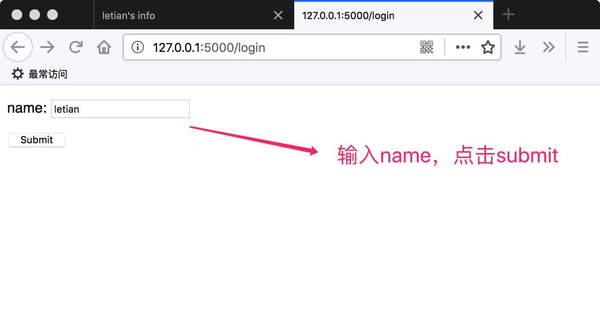
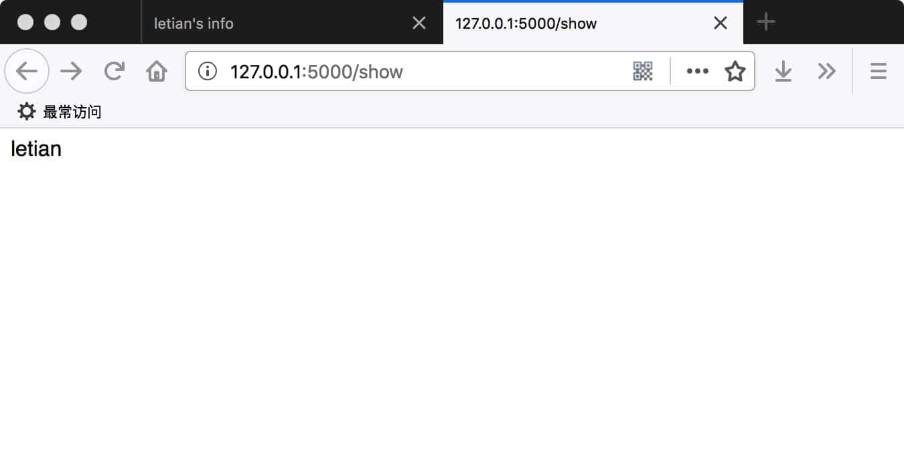

用户会话
本文讲述在 Python Flask Web 框架中如何处理用户会话，即 session。
session用来记录用户的登录状态，一般基于cookie实现。
下面是一个简单的示例。
建立Flask项目
按照以下命令建立Flask项目HelloWorld:
mkdir HelloWorld
mkdir HelloWorld/static
mkdir HelloWorld/templates
touch HelloWorld/server.py
编辑HelloWorld/server.py
内容如下：
from flask import Flask, render_template_string, \
session, request, redirect, url_for
app = Flask(__name__)
app.secret_key = 'F12Zr47j\3yX R~X@H!jLwf/T'
@app.route('/')
def hello_world():
return 'hello world'
@app.route('/login')
def login():
page = '''
<form action="{{ url_for('do_login') }}" method="post">
<p>name: <input type="text" name="user_name" /></p>
<input type="submit" value="Submit" />
</form>
'''
return render_template_string(page)
@app.route('/do_login', methods=['POST'])
def do_login():
name = request.form.get('user_name')
session['user_name'] = name
return 'success'
@app.route('/show')
def show():
return session['user_name']
@app.route('/logout')
def logout():
session.pop('user_name', None)
return redirect(url_for('login'))
if __name__ == '__main__':
app.run(port=5000, debug=True)
代码的含义
app.secret_key用于给session加密。
在/login中将向用户展示一个表单，要求输入一个名字，submit后将数据以post的方式传递给/do_login，/do_login将名字存放在session中。
如果用户成功登录，访问/show时会显示用户的名字。此时，打开firebug等调试工具，选择session面板，会看到有一个cookie的名称为session。
/logout用于登出，通过将session中的user_name字段pop即可。Flask中的session基于字典类型实现，调用pop方法时会返回pop的键对应的值；如果要pop的键并不存在，那么返回值是pop()的第二个参数。
另外，使用redirect()重定向时，一定要在前面加上return。
效果
进入http://127.0.0.1:5000/login，输入name，点击submit：

进入http://127.0.0.1:5000/show查看session中存储的name：

设置sessin的有效时间
下面这段代码来自Is there an easy way to make sessions timeout in flask?：
from datetime import timedelta
from flask import session, app
session.permanent = True
app.permanent_session_lifetime = timedelta(minutes=5)
这段代码将session的有效时间设置为5分钟。
本节源码
https://github.com/letiantian/flask-tutorial/tree/master/demo/flask-demo-011